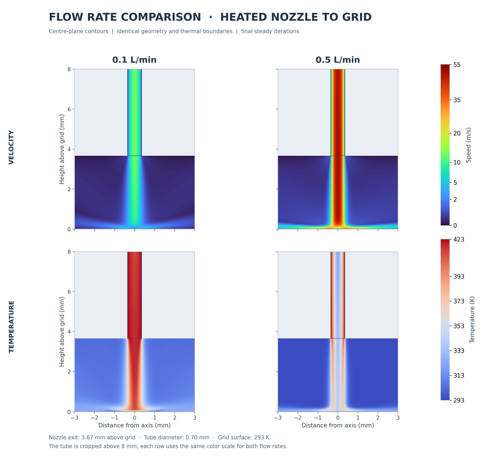
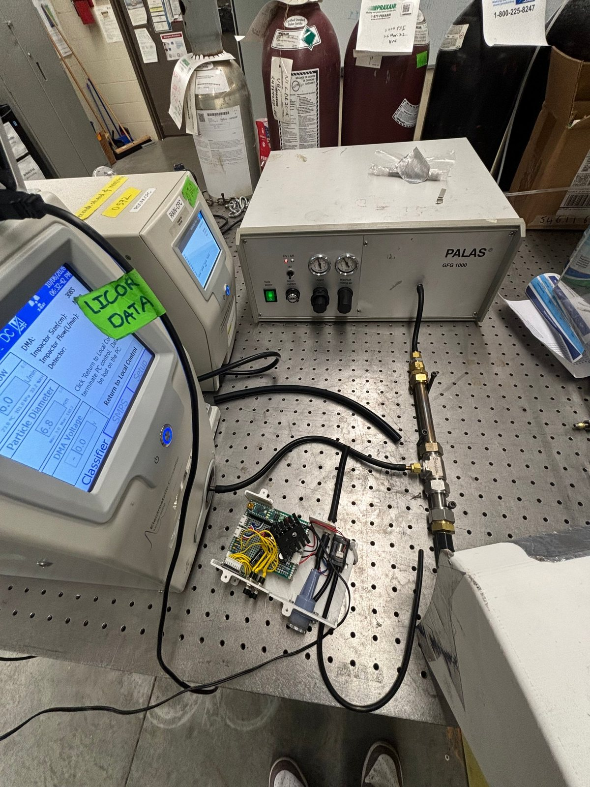
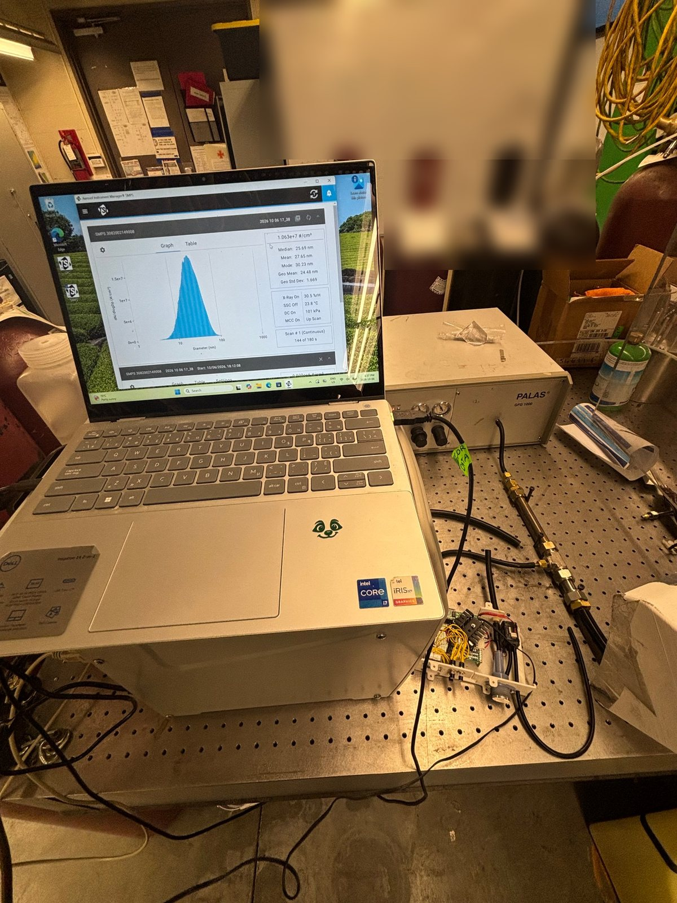
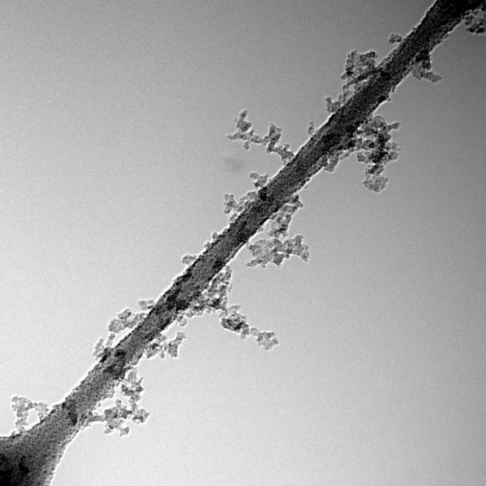
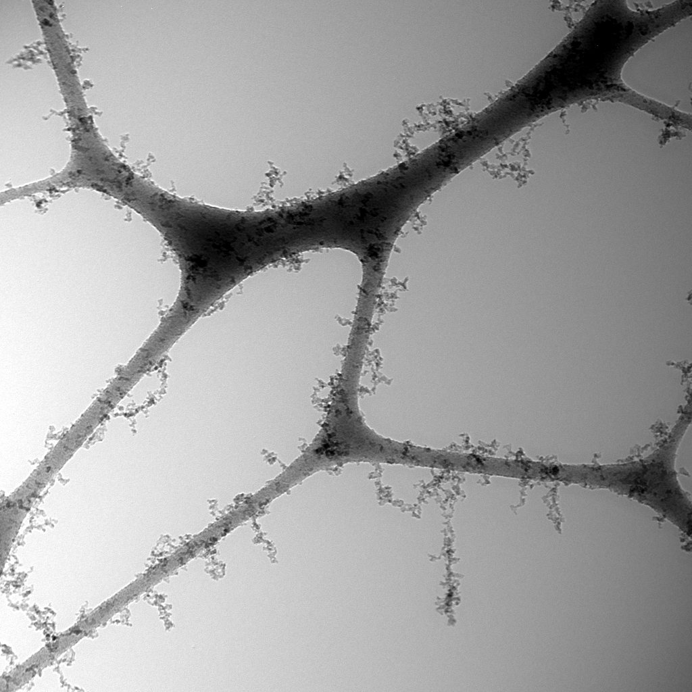
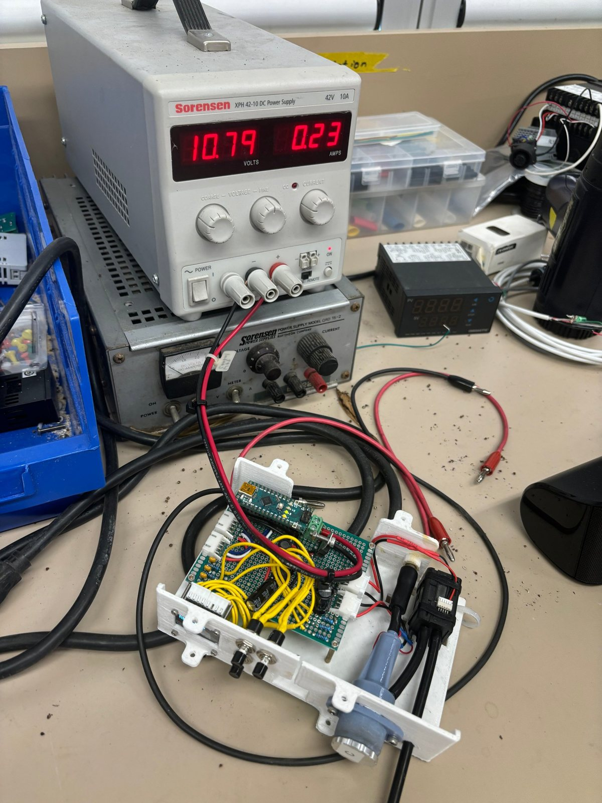
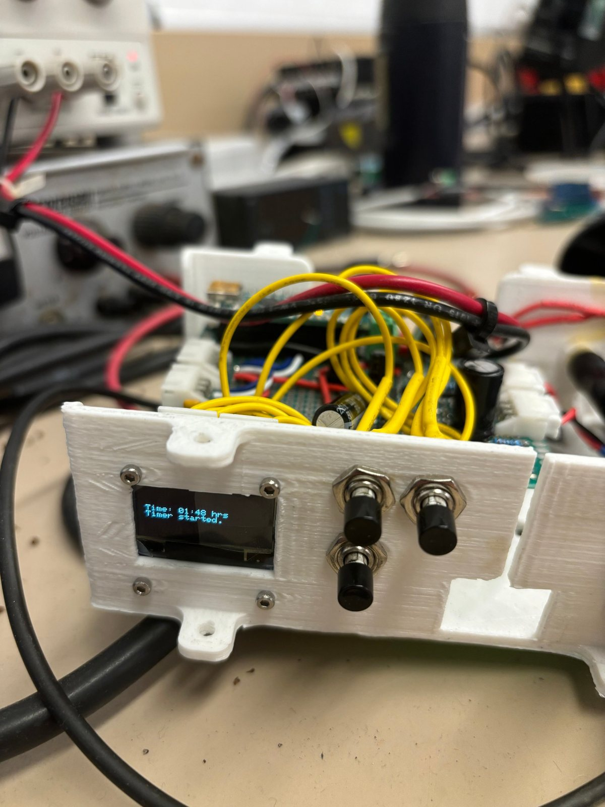
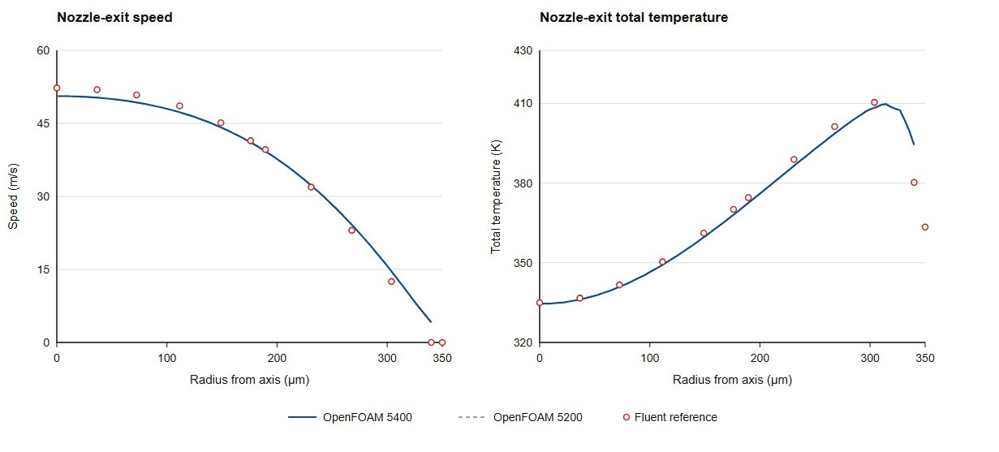

Thermophoretic Sampler
Experimental and computational validation of a TEM grid sampler
- Year
- 2026–27
- Context
- MECH 493 thesis project · UBC Energy & Aerosol Laboratory
- Tools
- OpenFOAM · CFD · SMPS · Spark-discharge aerosol · TEM · Arduino








Testing the UBC thermophoretic sampler against a known aerosol and an OpenFOAM model, as the first step toward a package that collects several TEM samples during one UAV flight.
Why
TEM is one of the most direct ways to see the shape of soot, but the particles first have to land on a TEM grid. A thermophoretic sampler (TPS) does this with a temperature gradient: a heated jet of aerosol hits a cool grid, and small particles drift from hot gas toward the cold surface. Aircraft and drones can sample where people can't reach, but one grid exposed for a whole flight gives one blended sample. I'm working toward a package that collects at least five separate samples in a single flight.
Experiment
A Palas GFG 1000 spark-discharge generator produces a controlled aerosol. A scanning mobility particle sizer (SMPS) measures its size distribution and concentration as the reference, and the sampler collects particles onto a TEM grid for a known flow rate and time. The grids are imaged, and the particles will be counted with CarboSAMY. In the first runs the SMPS measured about 1.1 × 10⁷ particles/cm³ with a geometric mean diameter of 24.5 nm.
First results
10- and 20-minute samples collected plenty of aggregates on lacey carbon grids. The deposit is not uniform across the grid, though, so counting particles on the grid alone can't give a reliable collection efficiency. The next tests will put the SMPS on the sampler's exhaust as well and compare inlet and outlet concentrations.
CFD model
I built an OpenFOAM model of the heated nozzle and grid region (0.70 mm tube, exit 3.67 mm above the grid) to solve the flow and temperature fields. Its nozzle-exit speed and temperature profiles match an ANSYS Fluent reference. I then track 50 nm soot particles through the jet to see where and why they deposit, and compare flow rates such as 0.1 and 0.5 L/min.
Next steps
- Compare CFD deposition with the measured collection efficiency
- Vary flow rate, heater temperature, and jet-to-grid spacing in both model and experiment
- Design and prototype a multi-grid package for UAV sampling